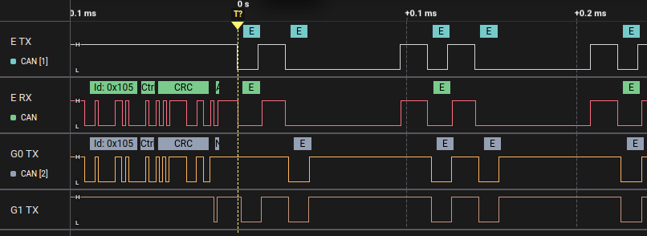

ABS Disconnection
In this challenge, your goal is to disable the car’s ABS by attacking the ABS ECU. Instead of just spoofing or injecting new messages, you will force the ABS ECU into a fault state so it stops communicating. This will cause the Central ECU to think the ABS has failed, and as a result, the ABS will be deactivated, and the dashboard will show the ABS warning light.
Hints
Let’s look how the ABS works in the simulator and what makes it vulnerable. Three ECUs participate in the ABS logic:
- The ABS ECU periodically sends an AbsMessage:
- CAN ID: 0x105
- No data
- Sent twice per second
- This message is a liveness heartbeat to prove the ABS is active.
- The Central ECU monitors these liveness messages:
- If it doesn’t receive them within a timeout, it disables the ABS.
- It then informs the Instrument Cluster of the new ABS status.
- Sends an AbsStateMessage:
- CAN ID: 0x100
- First byte: 0x4 (indicates it’s an ABS status message)
- Second byte: 0 if ABS is disabled; non-zero if enabled
- The Instrument Cluster reads this message and lights the ABS warning lamp if needed.
The security weakness here is that the system depends entirely on these periodic heartbeat messages to know if the ABS is present and active. If the ABS ECU stops sending them, even temporarily, the Central ECU concludes the ABS is broken and disables it.
This creates an opportunity for an attacker: if we can prevent the ABS ECU’s messages from reaching the bus, either by delaying them or forcing the ECU into a bus off state, the system will disable ABS, putting the car into an unsafe state.
Why does the Bus Off Attack work?
The CAN protocol has built-in error detection and fault handling. When an ECU sends messages that keep failing to be acknowledged or keeps detecting errors, its transceiver’s error counters increase. After several consecutive errors, the ECU transitions into a bus off state, where it stops transmitting until it recovers.
The Bus Off Attack exploits this by injecting error frames at exactly the right moment in the CAN frame, right before the sender believes the message was correctly sent. This results in:
- The ABS ECU thinking its messages are being rejected or corrupted.
- In consequence, the ABS ECU either delays sending new messages (retrying) or fully stops after entering bus off.
- Meanwhile, the Central ECU detects the missing heartbeat and disables the ABS.
The Bus Off Attack’s timing is similar to the Double Receive Attack, but here we deliberately corrupt the message so the receiver doesn’t get it either. We effectively silence the target ECU for a while.
Solution
Here’s how to do this attack using EvilDoggie. First, open EvilDoggie and enter the following command to configure the Bus Off Attack:
> bus_off_attack 0x105 50
- 0x105 is the CAN ID of the AbsMessage sent periodically by the ABS ECU
- 50 means send 50 consecutive error frames. This is usually enough to push the ECU into bus off or cause a significant delay.
Next, launch the attack with:
> attack 5
Here, 5 means the attack should succeed five times (delaying or breaking five consecutive messages). This increases the chance that the Central ECU’s heartbeat check will fail.
During the attack, watch the dashboard:
- The ABS warning light on the Instrument Cluster will turn on.
- Internally, the Central ECU has disabled the ABS, believing the ABS ECU is disconnected or failed.
If the attack is successful, the ABS ECU either enters bus off (stopping its messages entirely) or the messages are delayed long enough to break the heartbeat.
This demonstrates how a physical-layer CAN attack can have real safety consequences, even without needing to spoof or know message data, by simply forcing an ECU offline.
Observe the result in the logic analyzer (optional)
Connect you logic analyzer to evilDoggie's CAN Tx and Rx pins (E TX and E RX), and to the Tx pins of the other two interfaces (G0 TX and G1 TX).
You should the EvilDoggie injecting errors after the each ABS heartbeat message causing the ABS ECU to go silent for a period of time:

For information about CAN protocol and CAN message structure, you can check the Appendix at the end of this guide.